Simulation-Based Inference with Generative Neural Networks
ProbAI School 2026
University of Bonn
2026-08-06
Warm-Up Poll
Overview
Plan: Lecture mixed with exercises.
What is SBI? Introduction, Bayesian model types, normalizing flows.
→ Exercise 1: from MCMC to amortized inference.
Does it work? Calibration checking and model misspecification.
→ Exercise 2: diagnostics on an epidemic time-series model.
Modern generative models: diffusion models, flow matching, consistency models.
→ Exercise 3: diffusion models with post-hoc guidance.
Part 1: What is Simulation-Based Inference?
Learning Densities
Everything today does one thing: transport a Gaussian onto our target, here a checkerboard.
Everything Starts with a Simulator
We start from two objects we can sample: a prior and a scientific simulator. Together they define the forward process from unknown parameters \boldsymbol{\theta} to observables \mathbf{y}:
\boldsymbol{\theta} \sim p(\boldsymbol{\theta}), \qquad \mathbf{y} = \operatorname{Sim}(\boldsymbol{\theta}, \mathbf{u}),\quad \mathbf{u}\sim\text{RNG}(\cdot)
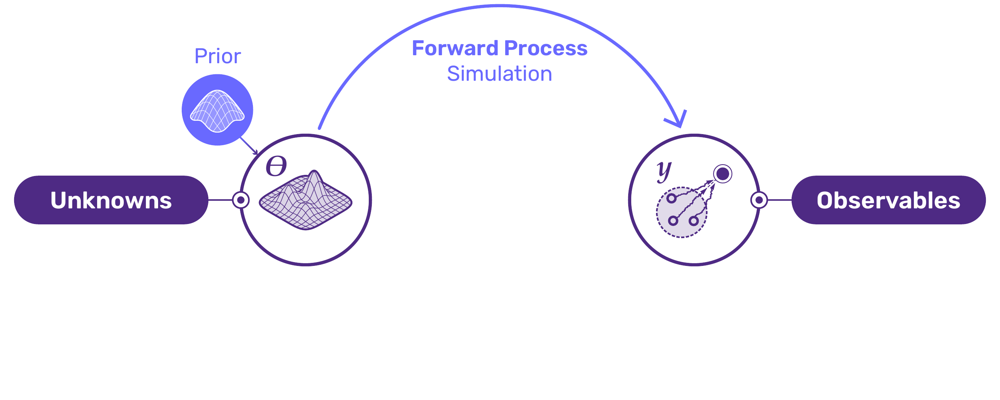
Parameters and data are drawn from the joint \boldsymbol{\theta}, \mathbf{y} \sim p(\boldsymbol{\theta}, \mathbf{y}), and that joint is our Bayesian model.
Figure: S. Radev, BayesFlow.
Forward and Inverse
Running the simulator forward can be slow, but it is usually possible. What we actually want is the inverse process, the posterior p(\boldsymbol{\theta} \mid \mathbf{y}_{\text{obs}}):
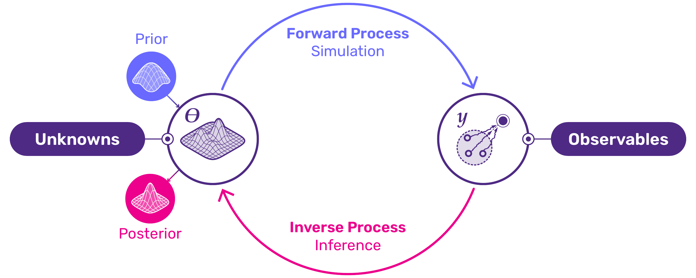
Likelihood-based (explicit)
- p(\boldsymbol{\theta}): sample and evaluate.
- p(\mathbf{y}\mid\boldsymbol{\theta}): sample and evaluate.
→ MCMC, VI (Day 1 & 2).
Simulation-based (implicit)
- p(\boldsymbol{\theta}): sample, evaluation optional.
- p(\mathbf{y}\mid\boldsymbol{\theta}): sample only, since the likelihood may be intractable.
A Simple Toy Example
3-segment planar robot arm (Kruse et al., 2021)
- Parameters (not observed): \boldsymbol{\theta}=(h,\alpha_1,\alpha_2,\alpha_3)
- Observation: end position \mathbf{y} = M(\boldsymbol{\theta}).
- Task: recover p(\boldsymbol{\theta}\mid \mathbf{y}).
- Challenge: different angles give the same \mathbf{y}, so the posterior is multimodal.

We will return to this example in Part 3.
Amortized Neural Posterior Estimation
Train a conditional density estimator q_{\boldsymbol{\phi}}(\boldsymbol{\theta}\mid\mathbf{y}) on simulations (\boldsymbol{\theta}, \mathbf{y}) using
\mathbb{E}_{p(\mathbf{y})}\big[\operatorname{KL}\!\big(p(\boldsymbol{\theta}\mid\mathbf{y})\,\Vert\, q_{\boldsymbol{\phi}}(\boldsymbol{\theta}\mid\mathbf{y})\big)\big]
This is the forward KL to the true posterior, averaged over the marginal data distribution. The unique minimizer is the true posterior q_{\boldsymbol{\phi}} = p(\boldsymbol{\theta}\mid\mathbf{y}).
\begin{align*} \mathbb{E}_{p(\mathbf{y})}\!\left[ \operatorname{KL}(p(\boldsymbol{\theta} \mid \mathbf{y}) \Vert q_{\phi}(\boldsymbol{\theta} \mid \mathbf{y})) \right] \notag &=\mathbb{E}_{p(\mathbf{y})}\mathbb{E}_{p(\boldsymbol{\theta} \mid \mathbf{y})}\!\left[ \log p(\boldsymbol{\theta} \mid \mathbf{y}) - \log q_{\phi}(\boldsymbol{\theta} \mid \mathbf{y}) \right] \notag \\ &=\mathbb{E}_{(\boldsymbol{\theta},\mathbf{y})}\!\left[ \log p(\boldsymbol{\theta} \mid \mathbf{y}) - \log q_{\phi}(\boldsymbol{\theta} \mid \mathbf{y}) \right] \notag \\ &=\mathbb{E}_{(\boldsymbol{\theta},\mathbf{y})}\!\left[ \log p(\boldsymbol{\theta} \mid \mathbf{y})\right] -\mathbb{E}_{(\boldsymbol{\theta},\mathbf{y})}\!\left[ \log q_{\phi}(\boldsymbol{\theta} \mid \mathbf{y}) \right]. \end{align*}
Optimizing allows us to drop the true posterior as it does not depend on \boldsymbol{\phi}: \boldsymbol{\phi}^* = \arg\min_{\boldsymbol{\phi}}\; \mathbb{E}_{(\boldsymbol{\theta},\mathbf{y})\sim p(\boldsymbol{\theta},\mathbf{y})}\big[-\log q_{\boldsymbol{\phi}}(\boldsymbol{\theta}\mid\mathbf{y})\big]
Amortization: pay the training cost once; inference on a new \mathbf{y}_{\text{obs}} is then a single evaluation of q_{\boldsymbol{\phi}}.
The Density Estimator: Normalizing Flows
How do we represent a flexible q_{\boldsymbol{\phi}}(\boldsymbol{\theta}\mid\mathbf{y}) that we can both sample and evaluate?
With a neural network, but an invertible one!
A normalizing flow transports a simple base p(\mathbf{z})=\mathcal{N}(\mathbf{0},\mathbf{I}) through a learned bijection f_{\boldsymbol{\phi}}(\cdot;\mathbf{y}) (Papamakarios et al., 2021; Rezende and Mohamed, 2015): \boldsymbol{\theta} = f_{\boldsymbol{\phi}}^{-1}(\mathbf{z};\mathbf{y}),\qquad \mathbf{z}\sim\mathcal{N}(\mathbf{0},\mathbf{I})
Change of variables gives a tractable density: q_{\boldsymbol{\phi}}(\boldsymbol{\theta}\mid\mathbf{y}) = p\big(f_{\boldsymbol{\phi}}(\boldsymbol{\theta};\mathbf{y})\big)\, \big|\det J_{f_{\boldsymbol{\phi}}}(\boldsymbol{\theta};\mathbf{y})\big|
- Plug into the NPE loss → maximize the exact log-likelihood of the flow.
- The price: the network must be invertible, and we must be able to compute \det J.
Making Flows Cheap: Coupling Layers
That computational costs sits in the log-determinant: \mathcal{O}(d^3) in general, but only \mathcal{O}(d) if the Jacobian is triangular.
Coupling flow (Dinh et al., 2017): split \boldsymbol{\theta}=(\boldsymbol{\theta}^A,\boldsymbol{\theta}^B), transform one block conditioned on the other: \mathbf{z}^A = f(\boldsymbol{\theta}, \mathbf{y}) = \boldsymbol{\theta}^A \odot \exp\!\big(s(\boldsymbol{\theta}^B,\mathbf{y})\big) + t(\boldsymbol{\theta}^B,\mathbf{y}), \qquad \mathbf{z}^B = \boldsymbol{\theta}^B
Then the inverse follows as: \boldsymbol{\theta}^A = \left(\mathbf{z}^A-t(\mathbf{z}^B,\mathbf{y})\right) \odot \exp\!\left(-s(\mathbf{z}^B,\mathbf{y})\right), \quad \boldsymbol{\theta}^B=\mathbf{z}^B.
- s, t are arbitrary neural nets (they need not be invertible).
- The log-determinant is \sum s(\cdot), and the inverse costs the same as the forward.
- Stack many layers f=f^1 \circ \cdots \circ f^L, alternating which block is transformed.
- Spline couplings (Durkan et al., 2019) add local flexibility compared to affine layers.
- Stacked coupling blocks are universal density approximators for sufficiently regular densities (Draxler et al., 2024).
Normalizing Flows on a Checkerboard
Each coupling layer applies one invertible step; the composition carries the Gaussian onto the checkerboard.
Two Networks: Summary + Inference
Raw data is rarely a fixed-size vector. A summary network compresses it first, and both networks are trained jointly, end to end:
\boldsymbol{\theta}\sim q_{\boldsymbol{\phi}}\big(\boldsymbol{\theta}\mid \underbrace{s(\mathbf{y})}_{\text{summary}}\big)
- Summary network s: compresses raw data \mathbf{y} (set, series, hierarchy) into a fixed-size vector, using the inductive bias that matches the data.
- Inference network q_{\boldsymbol{\phi}}: the conditional flow over parameters, taking s(\mathbf{y}) as its condition.
Ideal case: s is a sufficient statistic for \boldsymbol{\theta}. In practice it is a learned compression, optimized for posterior inference (Radev et al., 2020).
For plain vector data no summary network is needed: the flow conditions on \mathbf{y} directly.
What Structure Does the Data Have?
The flow needs a fixed-size conditioning vector, and different data structures call for different summary networks:
| Data type | Symmetry | Summary network |
|---|---|---|
| Exchangeable set | permutation invariance | DeepSet / Set Transformer |
| Time series | temporal order | GRU / CNN / Transformer |
| Hierarchical | nested groups | set-of-sets (composed) |
Model Type 1: Exchangeable Data
N i.i.d. observations: the posterior does not depend on ordering.
s(\mathbf{y}_{\pi(1)},\dots,\mathbf{y}_{\pi(N)}) = s(\mathbf{y}_1,\dots,\mathbf{y}_N)\quad\text{for all permutations }\pi
DeepSets (Zaheer et al., 2017) enforce this by a sum-decomposition: s(\mathbf{y}_1,\dots,\mathbf{y}_N) = \rho\Big(\textstyle\bigoplus_{i=1}^N \phi(\mathbf{y}_i)\Big) embed each element with \phi, pool with a symmetric aggregator (\sum, mean, max), decode with \rho.
Set Transformer (Lee et al., 2019): attention lets each element’s representation depend on the whole set, which is more flexible but more expensive. Both architectures handle variable N.
Model Type 2: Time Series
Ordering now carries information, so the summary network needs a temporal inductive bias.
Convolutional summaries share local filters across time: s_{t,k} = \sigma\Big(b_k + \sum_{l=-L}^{L}\sum_j w_{l,j,k}\,y_{t+l,j}\Big) Short-range patterns, position-invariant.
Recurrent (GRU/LSTM) summaries carry a hidden state: \mathbf{h}_n = f_{\boldsymbol{\phi}}(\mathbf{y}_n, \mathbf{h}_{n-1}) Long-range dependence via gating.
Transformers with time or positional embeddings also handle irregularly sampled series.
Model Type 3: Hierarchical Models
Data comes in groups (subjects, experiments, sites): local variation, shared global structure (Gelman et al., 2013).
\boldsymbol{\eta}\sim p(\boldsymbol{\eta}),\quad \boldsymbol{\theta}^{(r)}\sim p(\boldsymbol{\theta}\mid\boldsymbol{\eta}),\quad \mathbf{y}^{(r)}\sim p(\mathbf{y}\mid\boldsymbol{\theta}^{(r)})
Two coupled inference targets: p(\boldsymbol{\eta}\mid\{\mathbf{y}^{(r)}\}_{r=1}^R),\qquad p(\boldsymbol{\theta}\mid\mathbf{y}^{(r)},\boldsymbol{\eta})
Summary: a set of sets. Encode each group, then aggregate across groups with a permutation-invariant network.

Bottleneck: naive amortization needs many simulator calls per group, so the budget grows with R. Part 3 comes back to this.
BayesFlow: Train Your Own Approximator
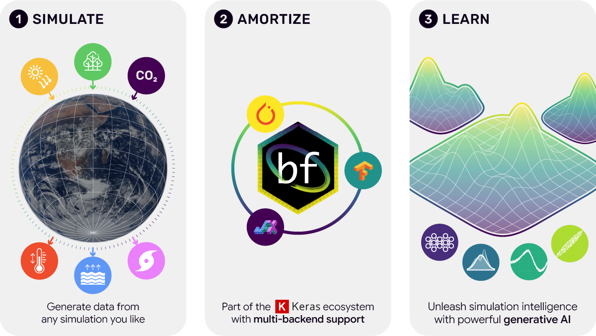
An open-source library for the full amortized Bayesian workflow: bayesflow.org
The Amortized Workflow
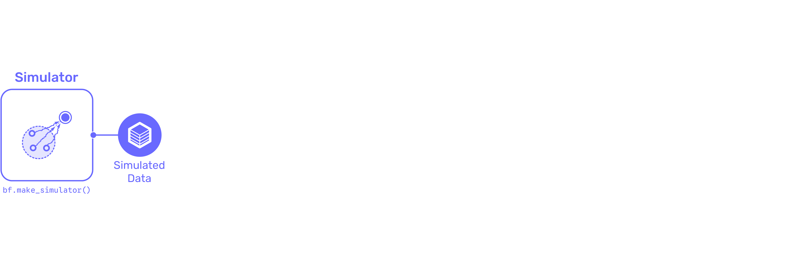
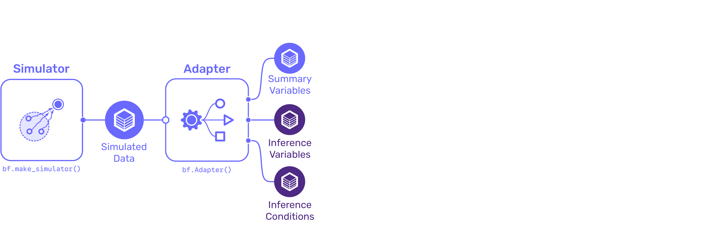
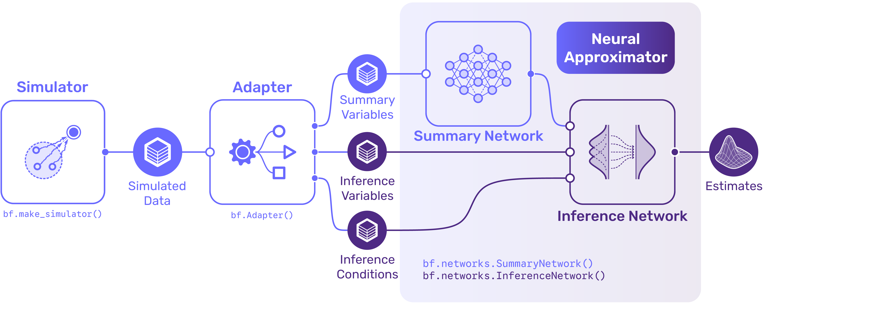
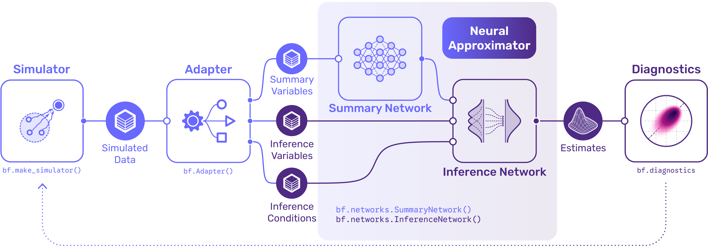
Build it up: simulate → adapt → train the neural approximator (summary + inference net) → diagnostics. Figure: S. Radev, BayesFlow.
Code: A Basic Workflow
import bayesflow as bf
# 1. Simulator: draw (theta, y) pairs. The only thing you must provide.
simulator = bf.make_simulator([prior, likelihood_simulator])
# 2. Adapter: name/standardize/reshape variables for the networks
adapter = (bf.Adapter()
.standardize()
.concatenate(["beta", "sigma"], into="inference_variables")
.concatenate(["y"], into="inference_conditions"))
# 3. Networks: inference (a normalizing flow) + optional summary net
workflow = bf.BasicWorkflow(
simulator=simulator,
adapter=adapter,
inference_network=bf.networks.CouplingFlow(), # normalizing flow
summary_network=None, # vector data → none needed
)Code: Train, then Query Any Dataset
# 4. Train on simulations (online: simulate fresh batches each step)
history = workflow.fit_online(epochs=50, batch_size=512)
# 5. Amortized inference: one forward pass per dataset
post = workflow.sample(conditions={"y": y_obs}, num_samples=2000)
# -> post["beta"]: (2000, d) posterior draws
# 500 new datasets, same network, no retraining:
post_many = workflow.sample(conditions={"y": Y_new_500}, num_samples=2000)Exercise 1
From MCMC to Amortized Bayesian Inference
- Revisit a Bayesian linear regression in Pyro.
- Hand the same Pyro model to BayesFlow as a simulator and train an amortized posterior.
- Check that the BayesFlow posterior matches MCMC on that dataset.
- Then time inference on 500 further datasets, without retraining.
Part 2: Does It Work? Calibration & Misspecification
Two Distinct Questions
We produce an approximation q(\boldsymbol{\theta}\mid\mathbf{y}) of the true posterior. Before we trust it, we must ask:
Is the inference faithful? Does q recover the correct posterior under the assumed model?
→ calibration checks (SBC, TARP, C2ST).
Is the model adequate? Does the model explain the observed data at all?
→ posterior/prior predictive checks, misspecification detection.
- A posterior predictive check alone cannot separate the two (Schmitt et al., 2024).
- Amortization makes (1) cheap: re-running inference on thousands of simulated datasets costs a forward pass each.
Simulation-Based Calibration (SBC)
SBC exploits a self-consistency property of the Bayesian joint (Cook et al., 2006; Talts et al., 2018). Define p_{\text{SBC}}(\mathbf{y},\boldsymbol{\theta},\tilde{\boldsymbol{\theta}}) = p(\boldsymbol{\theta})\,p(\mathbf{y}\mid\boldsymbol{\theta})\,q(\tilde{\boldsymbol{\theta}}\mid\mathbf{y}) = p(\mathbf{y})\,p(\boldsymbol{\theta}\mid\mathbf{y})\,q(\tilde{\boldsymbol{\theta}}\mid\mathbf{y})
If q = p(\boldsymbol{\theta}\mid\mathbf{y}), then \boldsymbol{\theta} and \tilde{\boldsymbol{\theta}} are identically distributed given \mathbf{y}.
Testing procedure: for many draws (\boldsymbol{\theta}^{(r)},\mathbf{y}^{(r)})\sim p(\boldsymbol{\theta},\mathbf{y}), sample \tilde{\boldsymbol{\theta}}\sim q(\cdot\mid\mathbf{y}^{(r)}) and compute the rank of the true \boldsymbol{\theta}^{(r)} among posterior draws.
Calibrated ⇒ ranks are uniform.
Empirical Cumulative Distribution Functions as a Diagnostic Tool
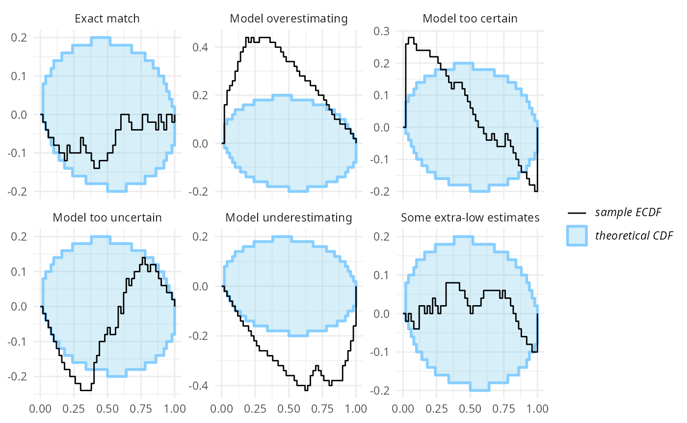
Plot the ECDF of ranks minus uniform, with simultaneous confidence bands. Inside the band → calibrated. Image: Martin Modrák.
SBC in Practice (BayesFlow)
# Simulate a fresh validation set the network never trained on
val = simulator.sample(1000)
post = workflow.sample(conditions=val, num_samples=500)
# Rank-ECDF calibration, per marginal
bf.diagnostics.plots.calibration_ecdf(
estimates=post, targets=val
)
# Recovery: posterior mean vs. ground truth
bf.diagnostics.plots.recovery(
estimates=post, targets=val
)A Caveat: Marginal SBC Is Necessary, Not Sufficient
Marginal rank checks can pass while the joint posterior is still wrong (Modrák et al., 2025).
An estimator that ignores informative parts of the data may still show uniform marginal ranks, because errors can cancel across marginals.
Fix: use data-dependent test quantities T(\boldsymbol{\theta},\mathbf{y}) so discrepancies accumulate instead of cancelling.
- TARP (Lemos et al., 2023): the distance to a random reference point, which depends on the data. Matching all references ⇔ q=p.
- C2ST (Lopez-Paz and Oquab, 2017; Yao and Domke, 2023): train a classifier to tell true joint p(\boldsymbol{\theta},\mathbf{y}) from approximate joint q(\boldsymbol{\theta}\mid\mathbf{y})p(\mathbf{y}). Accuracy \approx 0.5 ⇒ indistinguishable.
Model Misspecification
Calibration assumes the model generated the data. Real simulators are imperfect:
\mathbf{y}_{\text{obs}} \nsim p(\mathbf{y}\mid\boldsymbol{\theta})\ \text{for any}\ \boldsymbol{\theta}
This is a particular danger for amortized SBI. The network only ever saw the prior predictive, so if \mathbf{y}_{\text{obs}} falls outside that region it extrapolates and returns a confident but wrong posterior (Frazier et al., 2024; Schmitt et al., 2023).
- Nothing raises an error: the estimator returns a posterior either way.
- The mismatch has to be detected explicitly.
Detecting Misspecification
Prior/posterior predictive check. Simulate replicated data \mathbf{y}^\ast from the fitted posterior; compare a test statistic T to T(\mathbf{y}_{\text{obs}}): p_{\text{ppc}} = \Pr\{T(\mathbf{y}^\ast)\ge T(\mathbf{y}_{\text{obs}})\mid\mathbf{y}_{\text{obs}}\} Extreme tail probability ⇒ the model cannot reproduce the data.
Summary-space distance. During training, learn the summary s(\mathbf{y}) under a distribution-matching penalty, for example MMD to \mathcal{N}(\mathbf{0},\mathbf{I}) (Schmitt et al., 2023). At test time, an observation whose summary s(\mathbf{y}_{\text{obs}}) is an outlier in that space flags misspecification.
The two checks answer different questions, so run both: calibration on simulations, and predictive adequacy on the real observation.
Exercise 2
Epidemic Time Series & Diagnostics
- Amortized posterior for a mechanistic SIR model (ODE + noisy reporting).
- A recurrent (GRU) summary network for the case-count time series.
- Run and interpret the diagnostic suite: SBC ECDF, recovery, contraction.
- Then confront the network with real COVID-19 data and judge model adequacy.
Part 3: Diffusion Models, Flow Matching, and Consistency Models
Why Go Beyond Normalizing Flows?
| Family | Architecture | Sampling | Density |
|---|---|---|---|
| Normalizing Flows | constrained (invertible) | 1 step | fast |
| Diffusion Models | free-form | multi-step | slow |
| Flow Matching | free-form | multi-step | slow |
| Consistency Models | free-form | few-step | N/A |
Dropping invertibility frees the architecture. What we gain is expressivity and, more importantly for the rest of this part, the ability to steer sampling after training. What we pay is sampling speed and, for consistency models, the density.
Benchmarking Diffusion Models
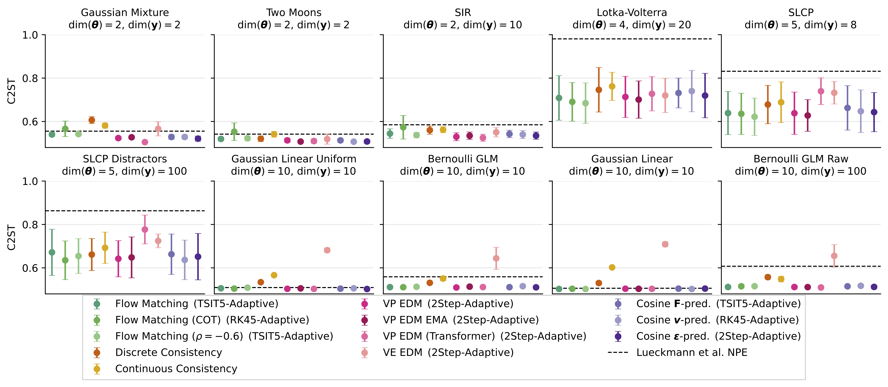
C2ST across ten benchmark tasks, so lower is better and 0.5 means indistinguishable from the reference posterior. The dashed line is the normalizing flow baseline of Lueckmann et al. (Arruda et al., 2025)
Diffusion Models
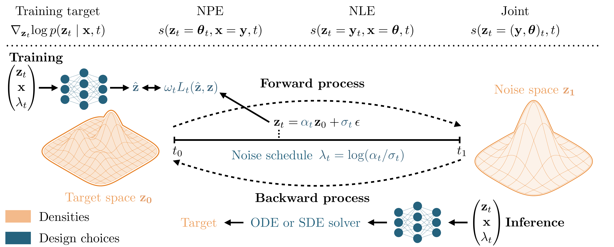
Forward noising (\mathbf{z}_t=\alpha_t\mathbf{z}_0+\sigma_t\epsilon) → train the network on \omega_t L_t(\hat{\mathbf{z}},\mathbf{z}) → backward via an ODE/SDE solver (Arruda et al., 2025).
Diffusion: The Forward Process
Start at the target \mathbf{z}_0 = \boldsymbol{\theta}. Gradually add noise via an SDE (Song et al., 2021): \mathrm{d}\mathbf{z}_t = f(t)\,\mathbf{z}_t\,\mathrm{d}t + g(t)\,\mathrm{d}\mathbf{W}_t
The forward transition is Gaussian in closed form, so nothing has to be simulated: p(\mathbf{z}_t\mid\mathbf{z}_0)=\mathcal{N}(\alpha_t\mathbf{z}_0,\sigma_t^2\mathbf{I}) \quad\Longleftrightarrow\quad \mathbf{z}_t = \alpha_t\mathbf{z}_0 + \sigma_t\boldsymbol{\epsilon},\ \ \boldsymbol{\epsilon}\sim\mathcal{N}(\mathbf{0},\mathbf{I}) We can jump to any noise level t directly.
Forward Process on a Checkerboard
A checkerboard target \mathbf{z}_0 melts into isotropic Gaussian noise as t:0\!\to\!1.
Diffusion: The Reverse Process
The forward SDE has a time-reversal (Anderson, 1982): \mathrm{d}\mathbf{z}_t = \big[f(t)\mathbf{z}_t - g(t)^2\, \nabla_{\mathbf{z}_t}\!\log p_t(\mathbf{z}_t)\big]\,\mathrm{d}t + g(t)\,\mathrm{d}\bar{\mathbf{W}}_t
The only unknown is the score \nabla_{\mathbf{z}_t}\log p_t(\mathbf{z}_t). Learn it, and we can integrate backwards from noise to a sample.
Denoising Score Matching
Regress a network \hat{s} onto the score of the (Gaussian) noising kernel: \hat{s} = \arg\min_{s}\; \mathbb{E}_{\mathbf{z}_0,\mathbf{y},\boldsymbol{\epsilon},t}\Big[\omega_t\,\big\Vert s(\mathbf{z}_t,\mathbf{y},t) - \nabla_{\mathbf{z}_t}\log p(\mathbf{z}_t\mid\mathbf{z}_0)\big\Vert_2^2\Big]
This has the same minimizer as regression on the marginal \nabla_{\mathbf{z}_t}\log p(\mathbf{z}_t) (Song et al., 2021; Vincent, 2011). The neural network can be any architecture which predicts a score, e.g., a MLP (Sharrock et al., 2024) or a transformer (Gloeckler et al., 2024).
Because \mathbf{z}_t = \alpha_t\mathbf{z}_0 + \sigma_t\boldsymbol{\epsilon} is Gaussian, the conditional target is known in closed form: \nabla_{\mathbf{z}_t}\log p(\mathbf{z}_t\mid\mathbf{z}_0) = -\boldsymbol{\epsilon}/\sigma_t
Training therefore reduces to noise prediction: draw (\mathbf{z}_0,\mathbf{y}) from simulations, t\sim\mathcal{U}[0,1], and \boldsymbol{\epsilon}\sim\mathcal{N}(\mathbf{0},\mathbf{I}).
Predicting \mathbf{z}_0, \boldsymbol{\epsilon}, the velocity, or the score are equivalent parameterizations of the same object. Which one you regress on is a design choice.
What the Learned Score Looks Like
The trained model’s score s(\mathbf{z},t)\approx\nabla_{\mathbf{z}}\log p_t(\mathbf{z}) points toward the data cells and vanishes inside them.
Reverse Process: Stochastic SDE
The reverse SDE injects noise at every step.
Reverse SDE: Close-Up on the Final Steps
The same trajectory, zoomed into the last time steps.
From SDE to ODE: Flow Matching
The reverse SDE has a deterministic twin, the probability-flow ODE with the same marginals: \mathrm{d}\mathbf{z}_t = \Big[f(t)\mathbf{z}_t - \tfrac{1}{2}g(t)^2\, s(\mathbf{z}_t,\mathbf{y},t)\Big]\mathrm{d}t = v(\mathbf{z}_t,\mathbf{y},t)\,\mathrm{d}t
Flow matching (Lipman et al., 2023; Wildberger et al., 2023) skips the score and regresses the velocity field v directly, along a chosen interpolation between noise and data: \hat{v} = \arg\min_v\; \mathbb{E}_{t,\mathbf{z}_0,\boldsymbol{\epsilon}}\big[\Vert v(\mathbf{z}_t,\mathbf{y},t) - (\dot\alpha_t\mathbf{z}_0 + \dot\sigma_t\boldsymbol{\epsilon})\Vert_2^2\big]
- Straighter paths, so usually fewer integration steps.
- Density evaluation is available by integrating the Jacobian trace along the ODE, but it is expensive.
Reverse Process: Deterministic ODE
The probability-flow ODE has the same marginals as the SDE, but each sample now follows a single deterministic path.
Consistency Models
- Both the SDE and the ODE need many solver steps, which makes sampling slow.
- Consistency models (Schmitt et al., 2025; Song et al., 2023) learn a map that is invariant along a trajectory.
- It can jump straight to the endpoint: c(\mathbf{z}_t,\mathbf{y},t) = c(\mathbf{z}_{t'},\mathbf{y},t'),\qquad c(\mathbf{z}_0,\mathbf{y},0)=\mathbf{z}_0
Parameterize c(\mathbf{z}_t,\mathbf{y},t) = c_{\text{skip}}(t)\,\mathbf{z}_t + c_{\text{out}}(t)\,F(\mathbf{z}_t,\mathbf{y},t) with c_{\text{skip}}(0)=1,\ c_{\text{out}}(0)=0, and train outputs to agree at nearby times: \min_c\ \mathbb{E}\big[\omega_t\, d\big(c(\mathbf{z}_t,\mathbf{y},t),\ \bar c(\mathbf{z}_{t-\Delta t},\mathbf{y},t-\Delta t)\big)\big] → one- or few-step sampling: jump to the endpoint, re-noise to a lower level, and refine.
Consistency Sampling: Few Discrete Steps
Each step jumps straight to data, then re-noises to a lower level.
The Diffusion Model Family

Diffusion model (stochastic) · flow matching (deterministic ODE) · consistency model (direct jump).
Post-Hoc Guidance
This is what the free-form architecture bought us. The score is additive, so sampling can be steered after training by adding a gradient term.
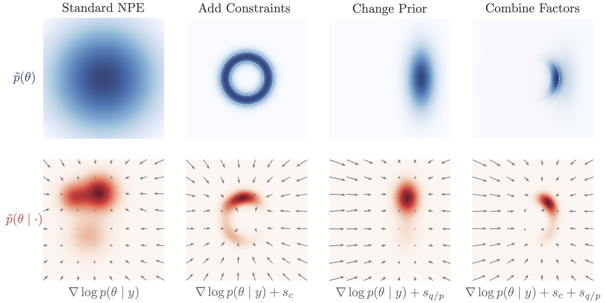
\nabla_{\boldsymbol{\theta}_t}\log p(\boldsymbol{\theta}_t\mid\text{extra}) \approx \hat{s}(\boldsymbol{\theta}_t,\mathbf{y},t) + \nabla_{\boldsymbol{\theta}_t}\log g(\boldsymbol{\theta}_t)
Impose constraints, change the prior, or compose models without retraining (Bansal et al., 2023; Yang et al., 2026).
Careful: Guidance Changes the Target
Guidance modifies the reverse-time marginals, so the density you sample from is generally not the one you intended (Chidambaram et al., 2024).
- Samples can be biased, and how badly depends on the type of guidance.
- Correction samplers (Langevin, MCMC, or weighting) can recover the target (Geffner et al., 2023; Skreta et al., 2025).
So re-check calibration after guidance, with the tools from Part 2.
Revisiting Hierarchical Models
Data comes in groups (subjects, experiments, sites): local variation, shared global structure (Gelman et al., 2013).
\boldsymbol{\eta}\sim p(\boldsymbol{\eta}),\quad \boldsymbol{\theta}^{(r)}\sim p(\boldsymbol{\theta}\mid\boldsymbol{\eta}),\quad \mathbf{y}^{(r)}\sim p(\mathbf{y}\mid\boldsymbol{\theta}^{(r)})
Two coupled inference targets: p(\boldsymbol{\eta}\mid\{\mathbf{y}^{(r)}\}_{r=1}^R),\qquad p(\boldsymbol{\theta}\mid\mathbf{y}^{(r)},\boldsymbol{\eta})
Bottleneck: simulation of a single observation is a set of sets.
Compositional Hierarchical Inference
Additive scores also solve the hierarchical bottleneck Compose per-group posteriors instead of simulating the full hierarchy (Arruda et al., 2026): \nabla_{\boldsymbol{\eta}}\log p(\boldsymbol{\eta}\mid\{\mathbf{y}^{(r)}\}) = (1-R)\nabla_{\boldsymbol{\eta}}\log p(\boldsymbol{\eta}) + \sum_{r=1}^R \nabla_{\boldsymbol{\eta}}\log p(\boldsymbol{\eta}\mid\mathbf{y}^{(r)})
Train on single groups; at inference, add the scores and sample the reverse SDE. This scales to 250K+ groups, with a total simulation budget smaller than one simulation of the full hierarchical model.
Revisiting the Robot Arm
Back to the toy example from Part 1. A diffusion model with a plain MLP score net recovers the multimodal, non-identifiable geometry:

Exercise 3
Diffusion Models & Custom Guidance
- Train a diffusion posterior for the multimodal inverse-kinematics arm.
- Compare it against a normalizing flow and a consistency model.
- Write your own guidance constraint and steer sampling after training via
guidance_kwargs.
Take-Home
- SBI needs nothing but a simulator you can sample.
- Amortization trades a one-time training cost for instant inference on any dataset.
- A summary network encodes the structure of the data (set, time series, hierarchy).
- Validate two things separately: SBC for calibration, predictive checks for misspecification.
- Diffusion, flow matching, and consistency models drop invertibility, which is what makes them steerable after training.
Some open questions I am thinking about currently:
- Which density do we target after post-hoc guidance?
- Can we guide a consistency model?
- What to amortize over vs. adapt post hoc?
Whatever you build: check it with simulation-based calibration.
Additional Resources
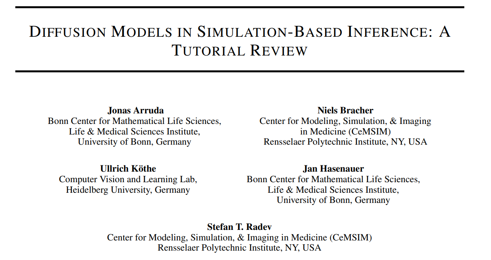
Tutorial review paper: 50+ SBI & diffusion models papers, benchmarks, and discussion of design choices.
▶ Tutorial with Solutions: https://github.com/arrjon/BayesFlowTutorial
jonas.arruda@uni-bonn.de
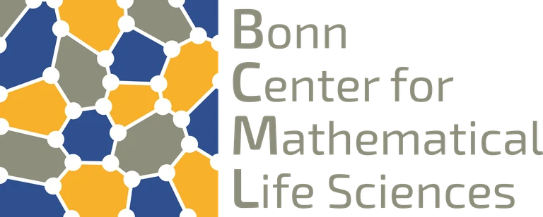